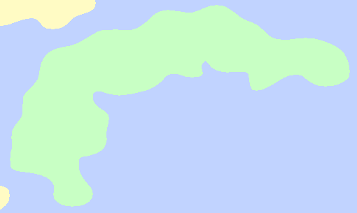
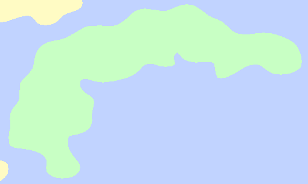

Dolos
An old investigation in Dolos led to the discovery of a hamlet of ruined houses people had once used to live on the island, though no bodies of those inhabitants were ever found. Instead, this investigation led to the discovery of chocolate in the region, an old fruit there had been tales of since the prehistory of Karvaea. This immediately led to a fetching boom in the region.
Much of the region is covered in rainforests very similar to Drosera, which had made droserians much less interested in the close region before the discovery of chocolate.
Close